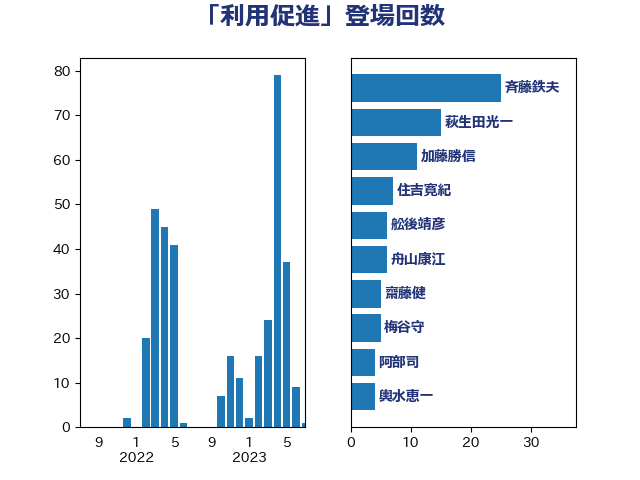

単語「利用促進」

| 斉藤鉄夫 | 公明党 | 25 回 |
| 萩生田光一 | 自由民主党 | 15 回 |
| 加藤勝信 | 自由民主党 | 11 回 |
| 住吉寛紀 | 日本維新の会 | 7 回 |
| 舩後靖彦 | れいわ新選組 | 6 回 |
| 舟山康江 | 国民民主党 | 6 回 |
| 齋藤健 | 自由民主党 | 5 回 |
| 梅谷守 | 立憲民主党 | 5 回 |
| 阿部司 | 日本維新の会 | 4 回 |
| 輿水恵一 | 公明党 | 4 回 |
| 西村康稔 | 自由民主党 | 4 回 |
| 永岡桂子 | 自由民主党 | 4 回 |
| 後藤茂之 | 自由民主党 | 4 回 |
| 高橋光男 | 公明党 | 3 回 |
| 鈴木俊一 | 自由民主党 | 3 回 |
| 角田秀穂 | 公明党 | 3 回 |
| 石井苗子 | 日本維新の会 | 3 回 |
| 渡辺創 | 立憲民主党 | 3 回 |
| 岸田文雄 | 自由民主党 | 3 回 |
| 古川禎久 | 自由民主党 | 3 回 |
| 高橋千鶴子 | 日本共産党 | 2 回 |
| 高木宏壽 | 自由民主党 | 2 回 |
| 青山繁晴 | 自由民主党 | 2 回 |
| 長谷川英晴 | 自由民主党 | 2 回 |
| 長浜博行 | 無所属 | 2 回 |
| 野田国義 | 立憲民主党 | 2 回 |
| 野村哲郎 | 自由民主党 | 2 回 |
| 里見隆治 | 公明党 | 2 回 |
| 紙智子 | 日本共産党 | 2 回 |
| 漆間譲司 | 日本維新の会 | 2 回 |
| 渡辺猛之 | 自由民主党 | 2 回 |
| 河野太郎 | 自由民主党 | 2 回 |
| 村田享子 | 立憲民主党 | 2 回 |
| 早坂敦 | 日本維新の会 | 2 回 |
| 新垣邦男 | 立憲民主党 | 2 回 |
| 平林晃 | 公明党 | 2 回 |
| 小宮山泰子 | 立憲民主党 | 2 回 |
| 大島敦 | 立憲民主党 | 2 回 |
| 堂込麻紀子 | 無所属 | 2 回 |
| 加藤明良 | 自由民主党 | 2 回 |
| 加田裕之 | 自由民主党 | 2 回 |
| 中川宏昌 | 公明党 | 2 回 |
| 中司宏 | 日本維新の会 | 2 回 |
| 下野六太 | 公明党 | 2 回 |
| 鬼木誠 | 立憲民主党 | 1 回 |
| 高見康裕 | 自由民主党 | 1 回 |
| 高良鉄美 | 無所属 | 1 回 |
| 高木かおり | 日本維新の会 | 1 回 |
| 高市早苗 | 自由民主党 | 1 回 |
| 須藤元気 | 無所属 | 1 回 |
| 門山宏哲 | 自由民主党 | 1 回 |
| 長谷川淳二 | 自由民主党 | 1 回 |
| 長友慎治 | 国民民主党 | 1 回 |
| 鈴木義弘 | 国民民主党 | 1 回 |
| 金村龍那 | 日本維新の会 | 1 回 |
| 金子恵美 | 立憲民主党 | 1 回 |
| 野中厚 | 自由民主党 | 1 回 |
| 越智俊之 | 自由民主党 | 1 回 |
| 谷田川元 | 立憲民主党 | 1 回 |
| 谷合正明 | 公明党 | 1 回 |
| 西田昭二 | 自由民主党 | 1 回 |
| 西村明宏 | 自由民主党 | 1 回 |
| 若林健太 | 自由民主党 | 1 回 |
| 舞立昇治 | 自由民主党 | 1 回 |
| 緒方林太郎 | 無所属 | 1 回 |
| 簗和生 | 自由民主党 | 1 回 |
| 空本誠喜 | 日本維新の会 | 1 回 |
| 福島伸享 | 無所属 | 1 回 |
| 神田潤一 | 自由民主党 | 1 回 |
| 神津たけし | 立憲民主党 | 1 回 |
| 石井浩郎 | 自由民主党 | 1 回 |
| 石井正弘 | 自由民主党 | 1 回 |
| 田村貴昭 | 日本共産党 | 1 回 |
| 田村智子 | 日本共産党 | 1 回 |
| 田中昌史 | 自由民主党 | 1 回 |
| 田中健 | 国民民主党 | 1 回 |
| 熊谷裕人 | 立憲民主党 | 1 回 |
| 滝波宏文 | 自由民主党 | 1 回 |
| 清水真人 | 自由民主党 | 1 回 |
| 浜口誠 | 国民民主党 | 1 回 |
| 池畑浩太朗 | 日本維新の会 | 1 回 |
| 森本真治 | 立憲民主党 | 1 回 |
| 森山浩行 | 立憲民主党 | 1 回 |
| 松野博一 | 自由民主党 | 1 回 |
| 杉久武 | 公明党 | 1 回 |
| 末松信介 | 自由民主党 | 1 回 |
| 木村英子 | れいわ新選組 | 1 回 |
| 木村次郎 | 自由民主党 | 1 回 |
| 日下正喜 | 公明党 | 1 回 |
| 徳永エリ | 立憲民主党 | 1 回 |
| 庄子賢一 | 公明党 | 1 回 |
| 平沼正二郎 | 自由民主党 | 1 回 |
| 平山佐知子 | 無所属 | 1 回 |
| 川合孝典 | 国民民主党 | 1 回 |
| 岩田和親 | 自由民主党 | 1 回 |
| 岩本剛人 | 自由民主党 | 1 回 |
| 山本太郎 | れいわ新選組 | 1 回 |
| 山口壯 | 自由民主党 | 1 回 |
| 小野泰輔 | 日本維新の会 | 1 回 |
| 小林史明 | 自由民主党 | 1 回 |
| 小島敏文 | 自由民主党 | 1 回 |
| 小倉將信 | 自由民主党 | 1 回 |
| 寺田静 | 無所属 | 1 回 |
| 室井邦彦 | 日本維新の会 | 1 回 |
| 大塚耕平 | 国民民主党 | 1 回 |
| 大口善徳 | 公明党 | 1 回 |
| 大串正樹 | 自由民主党 | 1 回 |
| 塩田博昭 | 公明党 | 1 回 |
| 城井崇 | 立憲民主党 | 1 回 |
| 坂本祐之輔 | 立憲民主党 | 1 回 |
| 吉田久美子 | 公明党 | 1 回 |
| 古川直季 | 自由民主党 | 1 回 |
| 古川元久 | 国民民主党 | 1 回 |
| 加藤鮎子 | 自由民主党 | 1 回 |
| 前川清成 | 日本維新の会 | 1 回 |
| 倉林明子 | 日本共産党 | 1 回 |
| 伊藤俊輔 | 立憲民主党 | 1 回 |
| 伊波洋一 | 無所属 | 1 回 |
| 伊佐進一 | 公明党 | 1 回 |
| 井上哲士 | 日本共産党 | 1 回 |
| 中川郁子 | 自由民主党 | 1 回 |
| 中川貴元 | 自由民主党 | 1 回 |
| 三浦信祐 | 公明党 | 1 回 |